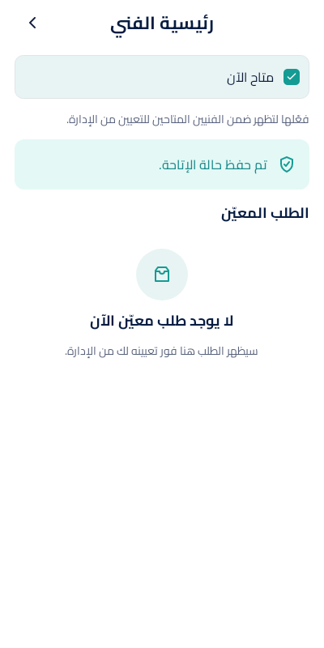
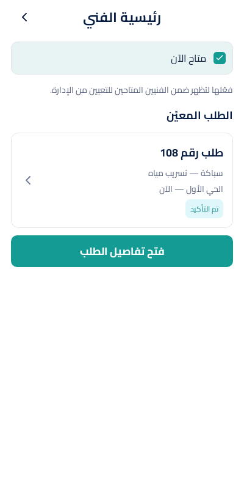

الدفعة 5ب — SCR-P08
7 حالات مشتركة: التحميل، الخطأ، غير متاح، متاح، الحفظ، نجاح الحفظ، والطلب المعيّن.
بوابة الاعتماد: راجع لقطات Android. لن تبدأ 5ج قبل اعتماد هذه الدفعة.
loading
iOS · SwiftUI
Swift Core وملف SwiftUI متحقق منهما آليًا على Linux؛ الرسم واللقطة مؤجلان لدفعة «تحقق iOS».
error

content
content
contentAndroid · XML/Paparazzi


iOS · SwiftUI
Swift Core وملف SwiftUI متحقق منهما آليًا على Linux؛ الرسم واللقطة مؤجلان لدفعة «تحقق iOS».
contentAndroid · XML/Paparazzi


iOS · SwiftUI
Swift Core وملف SwiftUI متحقق منهما آليًا على Linux؛ الرسم واللقطة مؤجلان لدفعة «تحقق iOS».